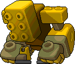

Lv. 42 · #4230109
블록골렘
시간의 균열이 일어났을 때 차원의 너머로 흘러들어갔던 블록퍼스의 일부는, 기묘한 블록과 결합되 강력한 블록골렘이 되었다. 하지만 그 결합은 완전하지 못하니 잘 두드려 부수면 블록골렘의 일부를 이루던 블록 조각들을 얻을 수 있다. 전기속성의 공격력을 갖고 있다.
스탯
레벨 42- HP
- 2,400
- MP
- 0
- EXP
- 102
- 넉백 가능 데미지
- 300+
- 물리 데미지
- 135
- 마법 데미지
- 0
- 물리 방어력
- 110
- 마법 방어력
- 90
- 속도
- -60
- 42레벨 에서의 필요 명중
- 43.992
- 메소
- 315.0
- 속성관계
- 전기속성반감 얼음속성반감 불속성약점
- 체경비
- 23.53
- 형태
- 무기물형
출현 지역
출현 맵 6개맵 이름을 누르면 메이플노트의 맵 정보가 열립니다.
드롭 테이블
전체 28개| 아이템 | 아이템 ID | 드롭 확률 |
|---|---|---|
| 노란색 장난감 블록 | 4000101 | 50% |
| 하얀 포션 | 2000002 | 1% |
| 파란 포션 | 2000003 | 1% |
| 활전용 화살 | 2060000 | 0.8% |
| 석궁전용 화살 | 2061000 | 0.8% |
| 강철의 원석 | 4010001 | 0.3% |
| 민첩성의 크리스탈 원석 | 4004002 | 0.08% |
| 마법의 가루(빨강) | 4007006 | 0.03% |
| 마법의 가루(파랑) | 4007002 | 0.03% |
| 단검 제작의 촉진제 | 4130014 | 0.01% |
| 두손검 제작의 촉진제 | 4130005 | 0.01% |
| 장갑 제작의 촉진제 | 4130000 | 0.01% |
| 블루 크라페 | 1002167 | 0.01% |
| 다크 길티언 | 1002154 | 0.01% |
| 레드 문라이트 | 1051024 | 0.01% |
| 골드 스케일러 | 1082070 | 0.01% |
| 다크 버글러 | 1002180 | 0.01% |
| 왕푸 | 1402002 | 0.01% |
| 다크 보닌 | 1472017 | 0.008% |
| 다크 문슈즈 | 1072117 | 0.008% |
| 완드 제작의 촉진제 | 4130010 | 0.008% |
| 블루 숄더메일 | 1040087 | 0.006% |
| 블루 숄더메일 바지 | 1060076 | 0.006% |
| 로우어 | 1462007 | 0.006% |
| 해골 방패 | 1092004 | 0.006% |
| 펜지 이어링 | 1032018 | 0.005% |
| 방패 방어력 주문서 60% | 2040901 | 0.004% |
| 네오자드 | 1482006 | 0.0017% |
조건에 맞는 드롭 아이템이 없습니다.
확률은 메이플노트에 게시된 값입니다. 아이템 이름을 누르면 원본 아이템 정보가 열립니다. 과거 버전 데이터이므로 실제 메이플랜드와 다를 수 있습니다.